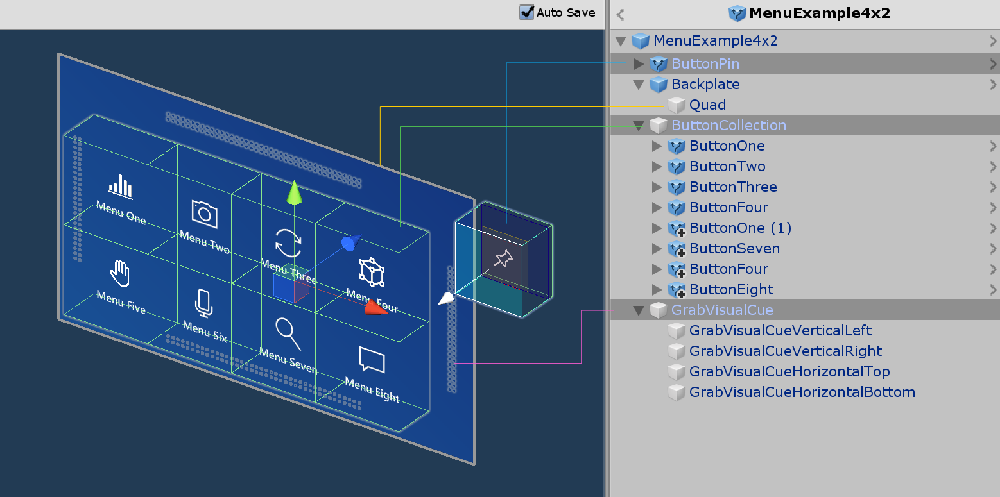
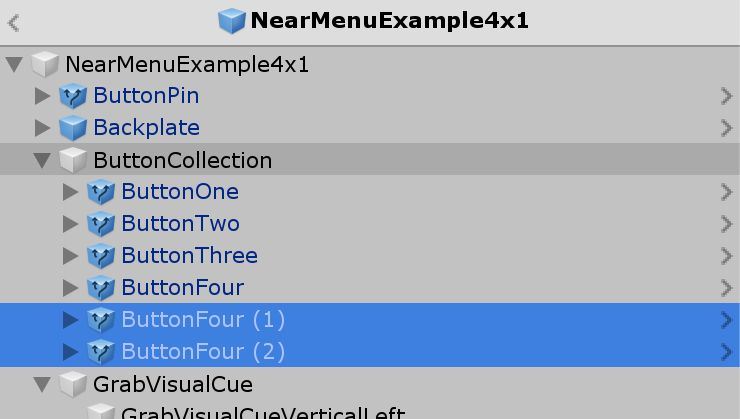

近处菜单 Near Menu

Near Menu是一个UX控件，它提供了一组按钮或其他UI组件。它漂浮在用户的身体周围，随时都可以使用。因为它是与用户松散耦合的，所以它不会干扰用户与目标内容的交互。用户可以使用'Pin'按钮对菜单进行世界锁定/解锁。菜单可以抓取并放置在一个特定的位置。
交互行为
- Tag-along:菜单跟随你，与用户保持30-60cm的距离，进行近距离交互。
- Pin:使用'Pin'按钮，菜单可以被锁定以及释放。
- Grab and move:菜单总是抓取和移动。无论之前的状态如何，菜单在抓取和释放时都将被锁定(世界坐标锁定)。可抓取区域有视觉提示。它们是由hand proximity规定的。

预制体
近处菜单预制体的设计目的是演示如何使用MRTK的各种组件来为近距离交互构建菜单。
- NearMenuExample3x1.prefab
- NearMenuExample3x2.prefab
- NearMenuExample3x3.prefab
- NearMenuExample4x1.prefab
- NearMenuExample4x2.prefab
示例场景
你可以在NearMenuExamples场景中找到靠近菜单预置的例子。

结构
近处菜单预制体由以下MRTK组件制成。
- PressableButtonHoloLens2 预制体
- Grid Object Collection: 网格中的多个按钮布局
- Manipulation Handler: 抓取并移动菜单
- RadialView Solver: 跟随行为

如何自定义
1. 添加/删除按钮
在 ButtonCollection对象下，添加或删除按钮。

2. 更新Grid Object Collection
单击ButtonCollection对象的检查器中的Update Collection按钮。它将更新网格布局。

可以使用Grid对象集合的Rows属性配置行数。

3. 调整背板尺寸
调整Backplate对象下的Quad的大小。背板的宽度和高度为 0.032 *[按钮数量+1]。例如，如果你有 3 x 2 的按钮，背板的宽度是0.032 * 4，高度是0.032 * 3。你可以直接把这个表达式放到Unity的字段中。

- HoloLens 2按钮默认尺寸为3.2x3.2 cm (0.032m)